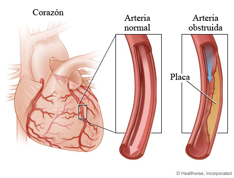
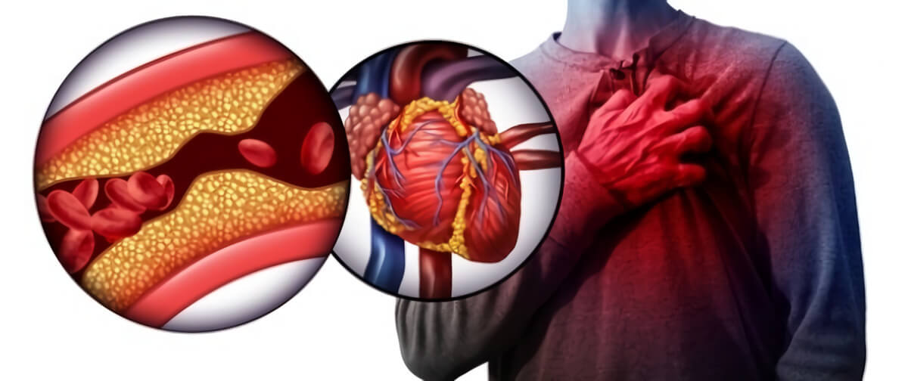

Corresponsal: Raúl, ¿cómo fue su primer encuentro con la hipertensión?, ¿qué antecedió a esto?
Raúl Rodríguez: Pasé toda mi vida adulta en el campo. Estaba sembrando, cuidando y cosechando cultivos. Nunca tenía ningún problema de salud. Desde que tengo memoria siempre era bastante fuerte, persona no enfermiza. Lo maximum cogía un resfriado una vez en unos años. Pero todo cambió cuando cumplí cuarenta.
Al principio, los cambios apenas se notaban. Comencé a cansarme más rápido y al final del día me sentía completamente exhausto. Comencé a dormir mal, a menudo me despertaba en medio de la noche y, a veces, no podía dormirse hasta la mañana. Por la mañana sentía que no había descansado durante la noche. Esto afectó mi capacidad de trabajo. Mi esposa y mis colegas comenzaron a notar que me estaba volviendo más lento y débil. Posteriormente, a todo dicho encima se agregó meteosensibilidad. Si el clima se estaba cambiando, mi estado se estaba cambiando también: comenzaban dolores y me dolía la cabeza.
Esto continuó durante varios años. A pesar de los problemas con mi salud, no fui al médico. Pensaba que estaba sano y justificaba los síntomas por mi mediana edad. Además, todos a mi alrededor se quejaban de tales síntomas y nadie dijo que esto fuera anormal. Mientras tanto, la enfermedad iba progresando y se manifestó por completo a la edad de 46 años.
Comencé a sentirme mal varias veces al mes, luego cada semana. Y luego me di cuenta de que no podía recordar la última vez que me sentí normal. Mi estado en ese momento es difícil de describir con palabras. Estaba constantemente letárgico. Cuando me despertaba, no sentía que había descansado. Por el contrario, estaba aún más cansado. Me dolía la cabeza constantemente y el ahoguío aparecía por causa de un menor esfuerzo. Cuando usé el tonómetro por primera vez, mostró 160/100 mm Hg. Solo en esta situación decidí ver a un médico.
Corresponsal: ¿Qué dijo el médico, prescribió un tratamiento?
Raúl Rodríguez: Mi médico me diagnosticó hipertensión grado 2. El tratamiento incluía diuréticos, medicamentos para la presión arterial, medicamentos para el colesterol y desintegrantes. Una lista impresionante, más dieta y fisioterapia.
Durante unos seis meses, seguía cuidadosamente todas las recomendaciones de un especialista, mi esposa me ayudaba con la dieta. Pensaba que el problema de los vasos sanguíneos estaba resuelto, porque me sientía mejor. Solo una cosa me molestaba: todas las mañanas comenzaba el día con un puñado de pastillas y un tensiómetro, y todas las noches terminaba con insomnio.
Cuando fui al médico con esta queja, me explicó que mi plan de tratamiento era tomar pastillas regularmente. Esto significaba que por el resto de mi vida necesitaba tomar diariamente una gran cantidad de medicamentos. Todo porque la presión arterial alta no se curara para siempre y el "tratamiento" era de hecho una reducción forzada de la presión arterial. Los medicamentos antihipertensivos, que se prescriben para todos los pacientes hipertensos, son similares a los analgésicos. Cuando se toman, el dolor disminuye, el estado general mejora. Pero si dejas de tomarlos, el dolor vuelve en un instante.
Y en ese momento me di cuenta de que el tratamiento recomendado no era una cura para nada, sino solo una solución temporal que aplazaba el mal final. Además, esta opción tenía consecuencias desagradables. Cada pastilla que tomaba tenía una larga lista de efectos secundarios.
Debido a las pastillas, sufría de insomnio, somnolencia y debilidad general. Estos son solo algunos de los posibles efectos. Tomar medicamentos fuertes puede provocar visión borrosa, insuficiencia renal, pancreatitis, arritmias, edema periférico, dolor en las articulaciones, exacerbación de la gota. Si estudia con atención las instrucciones de los medicamentos, encontrará esta información en detalle. No quería aceptar esta situación.
Corresponsal: ¿No existe una alternativa suave a los medicamentos que usted estaba tomando?
Raúl Rodríguez: Todo médico conoce la lista de efectos secundarios del fármaco, pero aún así se lo prescribe al paciente. Porque, según mi médico, realmente no existe una alternativa de calidad.
Yo no conseguía entender cómo podría ser esto en el siglo XXI, cuando las personas dominan desde hace mucho tiempo el espacio y entrenan los robots. Por lo tanto, comencé a buscar a través de amigos, en la televisión, en Internet, formas de deshacerme de la presión arterial alta y no dañar mi cuerpo.
Usted comprende que en la clínica en que era atendido antes, mi decisión no fue respaldada. Por lo tanto, comencé a estudiar el problema por mi cuenta y, gradualmente, incluso me interesé en el autotratamiento. Como agrónomo especializado, buscaba respuestas en lo que sabía: plantas y hierbas. Por cierto, hasta mediados del siglo pasado, el tratamiento a base de hierbas fue muy utilizado en América Latina. Ayudaron en el tratamiento de muchas enfermedades, incluidas las graves.
Cuanto más estudiaba este tema, más me convencía de que debe haber un remedio confiable e inofensivo para las enfermedades vasculares.
Corresponsal: ¿Qué opina de esto, doctor Segura?
Dr. Pablo Segura: Desafortunadamente, no importa por cuánto sanos y fuertes fueramos en nuestra juventud, todos envejecemos. El proceso de envejecimiento comienza mucho antes de lo que muchos imaginan. A los 40 años, inevitablemente aparecen cambios vasculares ateroscleróticos. Arterias, las venas y los capilares pierden elasticidad, se vuelven quebradizos, se forman depósitos de grasa en sus paredes: placas de colesterol. Como resultado, la luz de los vasos se estrecha. El flujo de la sangre se reduce. Para bombear un volumen normal de sangre, el corazón tiene que trabajar duro. La presión arterial aumenta.
La presión arterial alta es un signo directo de vasos sanguíneos no sanos. Es necesario tomar medidas para mejorar el estado de los vasos o, como dicen, para limpiar los vasos.
Pero no tiene que esperar a que suba la presión arterial, ocúpese de la prevención de antemano. Aconsejo a los pacientes que dediquen tiempo a la prevención, a partir de los 30-35 años. Según la predisposición y el estilo de vida. Limpieza de vasos sanguíneos ayuda a fortalecer la inmunidad, prevenir el desarrollo de patologías del sistema cardiovascular y enfermedades vasculares. Además, durante el proceso de limpieza, se eliminan sustancias nocivas, placas de colesterol, se expande la luz en los vasos. Lo más obvio que sucede en el cuerpo humano: la cabeza deja de doler, la visión y el oído mejoran. Sientes una oleada de fuerza y energía, no hay más fatiga crónica.
Corresponsal: ¿Qué pasará si no limpias los vasos sanguíneos, como dices, desde la juventud?
Dr. Pablo Segura: Si los vasos sanguíneos no se limpian, se inician procesos destructivos en el cuerpo: se desarrolla hipertensión, los músculos del corazón se debilitan. Esto conduce a insuficiencia cardíaca. Los riñones, los vasos sanguíneos del cerebro y los ojos también se ven afectados, y existe una predisposición a la diabetes.
La peor consecuencia de la presión arterial alta es un ataque al corazón y un derrame cerebral. Y esto a su vez conduce a la discapacidad o la muerte a una edad temprana. Las consecuencias son graves.
Corresponsal: Efectivamente, es mejor hacer prevención que sufrir las consecuencias de la hipertensión arterial. Pero, ¿existen formas de la prevención y el tratamiento distintas a las que expresó Raúl?
Dr. Pablo Segura: Raúl tuvo razón en su hipótesis: las hierbas realmente ayudan a limpiar los vasos sanguíneos. En mi opinión, esta es generalmente la forma más efectiva y fácil de prevenir y tratar. Las plantas medicinales afectan suavemente el cuerpo, el efecto de su uso se acumula y dura mucho tiempo, lo que le permite obtener resultados sorprendentes.
Raúl Rodríguez: ¿Puedo ampliar la respuesta del médico? Tengo algo que decir sobre este tema. Gracias. Pasé muchas horas en la biblioteca buscando información sobre las hierbas y sus efectos en el cuerpo. Una vez, mirando la enciclopedia de plantas medicinales, encontré una receta para una decocción "Para enfermedades vasculares". Encontré la primera mención de este remedio. Al final resultó que fue desarrollado por el famoso farmacéutico alemán Ludwig Klamor Markwart en el siglo XVIII. Mi instinto interior me dijo que esta receta era lo que estaba buscando.
Me sorprendió, pero había una compañía en Internet que, como yo, una vez llamó la atención sobre la receta y la recreó. Inmediatamente les pedí varios paquetes del remedio para probar su efecto en mí mismo.
Dr. Pablo Segura: Puedo adivinar de qué medicamento está hablando. ¿Es ?
Raúl Rodríguez: ¡Así es! Encontré en el sitio web del fabricante cómo tomar correctamente. Es muy simple. Debe usar una cápsula regularmente 2 veces al día durante 4-6 semanas. Inmediatamente sentí que esto era exactamente lo que estaba buscando. ¡Durante 1,5 meses de tomar cápsulas diariamente, me deshice de todos los síntomas de la hipertensión! ¡Sentí una oleada colosal de vitalidad, mi cabeza comenzó a funcionar como si tuviera 30 años otra vez! Por primera vez en 8 años, me sentí bien.
En el segundo mes de usar , rechacé las píldoras recetadas por el médico. Sugerí que mi esposa y mi madre también comenzaran a tomar . Repito, simplemente no hay personas que no necesiten limpiar los vasos sanguíneos Y para las personas de la edad de mi madre, cualquier fortalecimiento del cuerpo es bueno, así que toda nuestra familia tomó un curso de tratamiento del remedio natural , y ayudó a todos.
Mi esposa y yo nos deshicimos por completo de los síntomas de la presión arterial alta y mi madre incluso pareció más joven. Todos a mi alrededor lo notaron.
Corresponsal: Dr. Segura, ¿qué puede decir usted al respecto de esto? ¿Qué sabe de ?
Dr. Pablo Segura: Conozco como un remedio eficaz para la prevención y el tratamiento de enfermedades cardiovasculares. El remedio limpia y fortalece los vasos sanguíneos, y también restaura el sistema circulatorio. Para describor su acción más concretamente: descompone las placas del colesterol, previniendo coágulos de sangre, elimina procesos inflamatorios y aumenta la elasticidad de las paredes de los vasos sanguíneos. Pero, lo más importante, este remedio natural no tiene efectos secundarios.
es una fórmula a base de los ingredientes vegetales 100% natural que incluye maíz morado, quinoa, bayas de acai, camu-camu, té verde, cúrcuma y graviola.
La efectividad del remedio se explica por la selección sabia de hierbas medicinales, su compatibilidad y las proporciones correctas. Los tres ingredientes clave de son el maíz morado, la quinoa y las bayas de acai.
Maíz morado: reduce el nivel de colesterol "malo" en el organismo. Fortalece las paredes de los vasos sanguíneos, aumenta su elasticidad y reduce la carga sobre el corazón. Tiene un efecto de fortalecimiento general, mejora la inmunidad.
Quinoa: Estimula la respiración de las células cerebrales y disminuye el ritmo cardíaco. La quinoa tiene un efecto positivo como agente antiinflamatorio. Afecta el metabolismo de los carbohidratos, reduce el azúcar en la sangre.
Bayas de acai: tienen un efecto positivo sobre el estado de los sistemas nervioso, endocrino, respiratorio y reproductivo, mejoran la microcirculación sanguínea y previenen eficazmente la formación de coágulos de sangre. Propicia la salida del organismo de radionúclidos y sales de metales pesados.
Basado en mi experiencia, puedo decir que un raro medicamento limpia y fortalece los vasos sanguíneos de manera así eficaz. Y ciertamente ningún remedio lo hace tan rápido como . Solo 1-2 meses son suficientes para que el sistema cardiovascular se recupere por completo. Y durante el primer mes, aproximadamente el 70% de sus vasos se limpiarán. Este no es mi invento, esto está confirmado por numerosas pruebas que se llevaron a cabo en la Universidad Nacional Autónoma de México. Estos estudios se dedicaron a probar la seguridad y eficacia del complejo herbal. pasó todas las pruebas.
Entonces, si usted siente que su presión arterial se ha convertido en un problema grave, si está cansado de la falta de vitalidad o es adicto a las pastillas, entonces comience a tomar . Se lo prescribo a todos mis pacientes que han cumplido 35 años. No tengo la meta en el futuro de hacerlos dependientes de las píldoras, privándolos de la oportunidad de vivir una vida plena. Desafortunadamente, no todos los médicos hacen lo mismo. Muchos médicos, incluso mis colegas, tienen miedo de perder pacientes. Para ellos, esto significa perder su salario. Por eso no mencionan el CardioActivo. Así lo hizo el médico que atendió a Raúl, pero para mí la conciencia y el juramento hipocrático valen más que el dinero.
De hecho, tiene la oportunidad de mejorar significativamente la calidad de su vida y olvidarse de los dolores de cabeza y la hipertensión sin el uso constante de pastillas. Y para esto ni siquiera necesita hacer un gran esfuerzo. Basta con tomar un curso de tratamiento de cápsulas naturales . En solo 1-2 meses, todos los ciclos de vida se restablecerán: la cabeza dejará de doler, la hinchazón, las bolsas debajo de los ojos, el exceso de peso desaparecerán, el cuerpo "resucitará". Sentirá una mejora en su estado y un aumento de la vitalidad, y lo más importante, de esta manera se protegerá de una muerte prematura por causa de un infarto o un derrame cerebral.
Para la profiláctica y para mantener el efecto positivo, le aconsejo tomar una vez cada 2 años. Esto ayudará a mantener el resultado obtenido y prevenir el desarrollo de enfermedades cardiovasculares.
Corresponsal: Raúl Rodríguez y al Dr. Pablo Segura, gracias por compartir su experiencia en el tratamiento de la hipertensión arterial. ¿Tiene algo que agregar al final de la entrevista?
Raúl Rodríguez: Si usted siente que los síntomas de la hipertensión arterial interfieren en su vida, no dude en tomar la decisión correcta. Lamento de haber pasado 8 años tratando de recuperar una vida plena. Es una tontería esperar un milagro o esperar hasta que la enfermedad comience a manifestarse. Adelántese a la edad, se ocupe de la prevención. Además, en su arsenal hay un remedio con la que esto no requerirá muchos problemas.
Dr. Pablo Segura: Me uno a Raúl para recordar que será útil para algo más que la prevención. También ayudará a aquellos que en este momento sufren de presión arterial alta. En solo un mes, le transformará de una persona que sufre la hipertensión crónica en una persona sana.
Inmediatamente después de realizar esta entrevista, fui a cenar con mis amigos. Impresionado por la conversación con Pablo y Raúl, no pude resistirme y compartí mis impresiones sobre con mis amigos. Christian Meier, mi amigo, se interesó en la historia y pidió una conversación inmediatamente después de que termináramos nuestra cena. Durante una breve conversación, Christian admitió que se reconoció a sí mismo en la historia de Raúl. Decidimos probar adicionalmente en mi amigo.
A continuación, publico su comentario a continuación. Lo recibí justo después de que Christian completara curso tratamiento de un mes y medio de :
¡Es increíble! Pero realmente me siento mucho mejor. Ahora tengo 51 años, a partir de los 50 años mi salud comenzó a deteriorarse: aparecieron dolores de cabeza frecuentes, dolores en el pecho, deterioro de la visión. Todo esto, lo sabía, eran signos de hipertensión. Mi médico me recetó una lista de píldoras, pero periódicamente me olvidaba de tomarlas debido a los vuelos y giras constantes. Decidí probar , sin esperar ningún resultado. Pero, milagrosamente, realmente me siento mejor. Fui a mi médico, él no cree que esto sea posible ¡La hipertensión ha retrocedido!
Cuando el fabricante se enteró de que estábamos preparando un artículo sobre su remedio, ofreció un descuento impresionante en el complejo de hierbas para nuestros lectores. Una oferta especial de -50% del costo será válida durante una semana después de la publicación de este artículo, es decir, del 13.04 al .
Para pedir con un 50 % de descuento, debe:
1) Completar el formulario de pedido oficial a continuación;
2) Esperar la llamada del empleado para confirmar la dirección de entrega;
3) Esperar la entrega del pedido. El mensajero entregará en 3-4 días a su puerta.
ATENCIÓN: ¡Hoy es el último día de venta de con descuento!